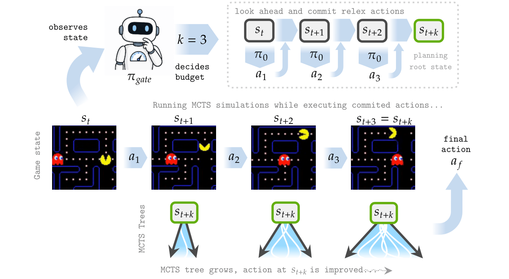
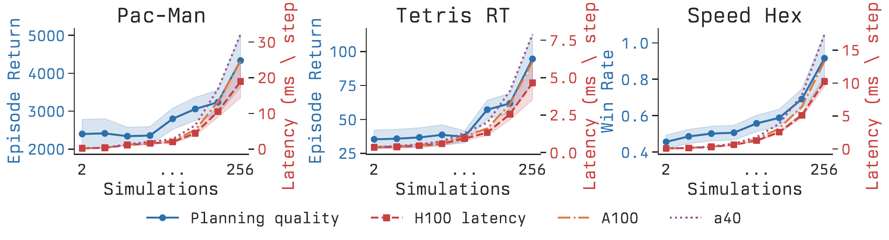
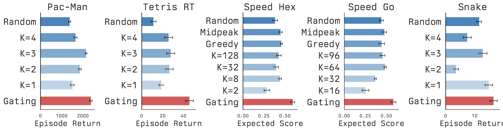
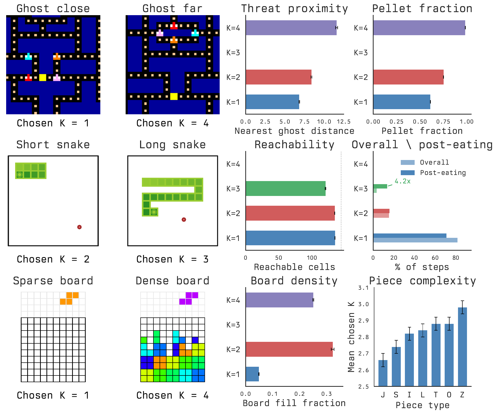
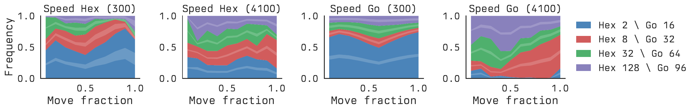
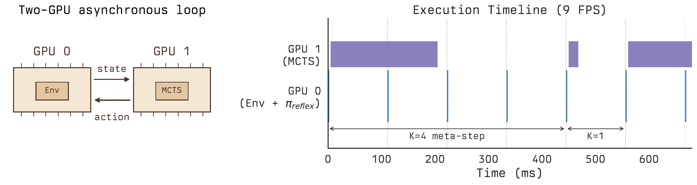
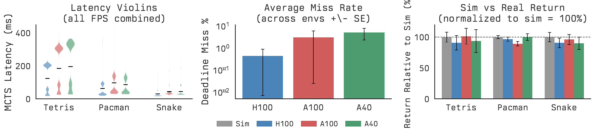

5
evaluation environments
Project page for a NeurIPS 2026 submission
In real-time reinforcement learning, thinking longer is not free. We study agents that decide how much time to spend planning before an action takes effect, then train a lightweight gating policy to choose state-dependent planning budgets.
Overview
5
evaluation environments
2
real-time regimes: committed-action and clock-based
1
lightweight gate on top of a frozen planner
0
architectural changes needed for two-GPU transfer
Standard RL assumes the environment waits for an agent forever. This paper drops that assumption. The world keeps moving while the agent thinks, so the right amount of deliberation becomes a resource allocation problem.
The central question is not whether planning helps. It does. The question is when to react immediately and when to pay the real-time cost of deeper search.
Method

Each decision point includes a second decision: how much computation should the agent spend before the next planned action takes effect? The gate predicts that budget cheaply, avoiding the paradox where planning about planning would itself cost too much.
Tradeoff
Across Pac-Man, real-time Tetris, and Speed Hex, deeper MCTS improves action quality while increasing inference latency on H100, A100, and A40 GPUs. That co-scaling is the reason adaptive budget allocation matters in the first place.

Results

Threat-sensitive control: react when ghosts are close, plan when the board opens up.
Dense boards trigger deep planning; sparse boards favor near-instant reaction.
Spatial constraint, not just fruit distance, determines when extra thinking is worth it.
Budget use changes with both board position and remaining clock.
The gate shifts compute across the game instead of committing to a single search depth.
Interpretability


Deployment


Takeaway
The paper’s main claim is simple: in environments that do not wait, computation itself becomes a control variable. Learning when to think is as important as learning what to do.
This site is deployed directly from the repository through GitHub Pages Actions.